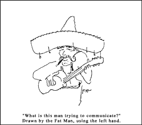

|
Lunch With The Fatman | 1, 2, 3
"Lights... Camera... Rock!"
Hi. Sit down. What are you having? Welcome to lunch with the Fat Man.
No, this one is not about shooting your video. This article has a focus more fundamental to your career. Yes, "lights...Camera...Rock!" is about your vocals.
Do I hear whining out there? "Aww," I seem to hear, "We wanted to shoot our video this month, and you're harping on boring old vocals." Well, tough beans, kiddo, you should have been expecting a verbal curve ball from the Fat Man. And if you can hit this one, you're going to be a lot more certain to score against, say, the Big leaguers in LA. Whatever that means.
What's your preparation for singing? Do you gargle coffee? Do you perform aerobics for an hour? Do you just jump into it, or do you warm up with exercises that make you sound like Tarzan reciting the Budapest phone book? Well, no matter what you do, there's one aspect of singing that needs to be addressed before you open your mouth and belt one out. And that aspect is summed up in the question, "Who is singing?"
 As a vocalist, the one thing that is truly essential to your song, your band, and your career, is that you come across as a convincing character every time you sing. Accent on convincing. Like an actor, you have to suspend reality for the audience - they have to feel that reality is the world that exists while you're singing your song. And it's more than lust acting - you have to write the whole movie, too, in order to create a comfortable context in which your character can exist.
When Elvis sang "love Me Tender," he sounded like he was in love. More than that - he was Elvis, the polite, dreamy, young rockin' rebel idol of a new generation in love. Was he actually in love every time he sang it? I think not. Madonna's "Material Girl" sounds like she's Cindy Lauper in a Betty Boop cartoon, but she's playful, fun, and convincing. Compare the character to the one she portrays in "Lucky Star" or "Like a Virgin," where she sounds like she (and I state this briefly only to avoid an unnecessarily long, colorful, arousing description) wants sex. And I bet that she sings all three songs in the same concert! Wow... how does her mood - her very personality - change so fast? Well, that's what vocal talent is all about.
Some artists are more overt in their efforts to become convincing characters. David Bowie and Peter Gabriel put on theatrical shows complete with face paint, so that you know that they're going to become characters. It works nonetheless, because their abilities are so strong.
Some actors, er, vocalists have a subtle twist - their life is the movie for all to see, and they are the character. See George Jones or John Lennon. This is a dangerous approach for two reasons. First, unlike George and John, your life and character might be too boring for any audience to want to pay to see. So, not only does your career go down the tubes, but you have to try to live with the feeling that the world has rejected you, rather than your music. Second, it's easy to screw up your credibility by getting caught acting out of character. We could forgive Tom Jones for anything he does, because we know he can always slip into his character and sing "It's Not Unusual." But we feel somehow ripped off when we hear rumors (true or not) about John Lennon insulting cripples, punching reporters, etc. And if George Jones was ever caught being happily married to Tammy, why that would lust end it for him. Yet, if you can pull it off, being the character is the most effective way of putting yourself across, because the meaning of each song stretches farther than the boundaries of the song. When this kind of artist sings a song, you relate it to his life, then to your life, then compare your life to his life...it gets very deep. Remember, though, that these artists still do the same mood changes from song to song that Madonna did in paragraph 6. How do they change moods so fast, yet still convince us that they're singing from their own point of view? Now that's a talent.
Frankly, I do not think that the physical ability to sing is anywhere near as important as this suspension of reality I've been talking about. If your character portrayal is weak, your voice had better be so strong that your name is the one that comes up when someone says technique. Ask Whitney.
Good focus and vision are paramount to any artistic endeavor - I tend to think that a good visual artist can paint with his left hand almost as well as his right.
So let's review: Normal vocalists like Madonna and Elvis create a movie and playa distinct character for each song they sing. Between songs they are themselves. The listener knows that the singer is slipping into character during the songs, and it's accepted as part of the show. Variations on this rule include Bowie and Gabriel, who often leave their real selves at home, only playing characters on the stage. Also, Lennon and Jones who make it seem that they are "themselves" all of the time.
Then there's Dylan, whose whole thing is that he's all of the above to different people. Which supports my theory that the better you have this stage personality thing down, the less you need rely on traditional vocal abilities and technique. Guess that's why they call it show biz.
Say, this was great. Let's have lunch more often.

|